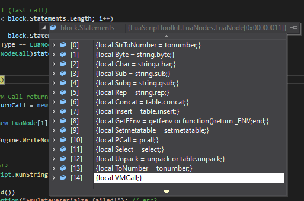
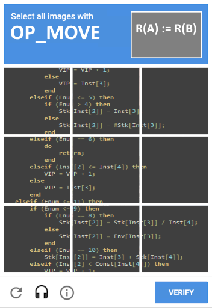

Lua Devirtualization Part 4: Custom Virtualization 01/06/2022
In the previous 3 articles, we have looked into the use cases of Lua obfuscation, and why it's so important. Followed by a deep dive into Lua compilation and recently in part 3, we took that compiler knowledge and somewhat pen tested an existing Lua Virtualized script for education purposes.
With all that previous research in mind, it's time to build our own custom Lua VM that we can then harden wherever we think is necessary. Once that is done, we will put it to the test and perform some attacks to see how effective our Lua VM actually is.
Before you continue, please note that the whole series -- including this article -- is targeting Lua 5.1 specifically!
This article is part 4 of 4, you can find a complete overview of all the articles below:
- Part 1: Introduction
- Part 2: Decompiling Lua
- Part 3: Devirtualizing Luraph
- Part 4: Custom Virtualization
Best Bang for Buck
Time is money! Both yours and my time is valuable so to get the best bang for buck I decided to simply fork an existing Lua VM obfuscator called IronBrew2. The IronBrew2 project is written in C# and works as follows.
First, it takes a Lua script as input to then invoke the LuaC binary, which will result in a compiled .luac file being written to disk.
Once the compiled Lua file is created the IronBrew2 will open the newly created file and start parsing all the compiled Lua information, very similar to what we have done in Part 2 with our LuaToolkit project.
After that's done it's time to start generating some Lua code, the first part will be the deserialization followed by the most important piece, the interpreter. The deserialization will contain all our data such as Lua Instructions, Constants, etc. Whereas the interpreter contains the logic of each opcode. Obviously, this is the part where all the magic happens, so hold tight as I finish explaining the high-level view.
Finally, after the somewhat custom Lua VM (prefab VM handlers + custom deserializer) is created it will launch a few LuaJIT instances to run a bunch of Lua scripts on the newly generated Lua VM script to perform minification, rename local variables, comments, and a bunch of other stuff.
The result is a final Lua script with (optionally) obfuscated/packed data serialization and a somewhat unique Lua interpreter that is generated for the exact set of instructions used in the original Lua script. To throw in some extra optional obfuscation some instructions might be mutated or duplicated.
Build-A-VM
Now that we have a high-level understanding of IronBrew2 it's time to fork IronBrew2 off GitHub and start customizing it. The project is fully open-sourced making it pretty insecure, hence why we will be modifying and enhancing where we think is needed.
NOTE: IronBrew2 was forked from GitHub user Trollicus, not sure if real author!
Compiler-ish
Compile using Lua
Serialize Instructions
Build: Instructions
Build: Data
The Lua VM
Deserialize Instructions
The Interpreter
Break-A-VM
To put our newly copy-pasted VM to the test we will perform some tests of our own. Hopefully, this will give a better understanding of where our weak points are and see how difficult it is to automate the devirtualization process.
For this article, I developed a new C# Library named LuaScriptToolkit which we will be using for the attack. The library is a Lua Tokenizer and Abstract Syntax Tree (AST) Parser that will assist us in disecting different components of the Lua VM during our attack.
Attack Vectors
In the previous article (part 3), we already took a deep look into attacking a similar Lua VM, so with that knowledge in mind I have come up with the following attack vectors that I think will be the most interesting ones.
Attacking Deserialization
Do you remember this big 'unpack' function that deserializes the VM data from the previous article? We managed to attack this by running the Lua VM inside a Lua IDE after we set a breakpoint. Once the execution halted at the breakpoint we dumped a table containing all the VM Memory.
Emulate Deserialization
To perform this attack automated I will be using MoonSharp -- a C# Library that allows the execution of Lua -- combined with our LuaScriptToolkit. The following code will iterate all statements in the main block and define the last function call as VMCall.
private Table EmulateDeserialze() { // append return to VM call if not already NodeCall vmCall = null; NodeBlock block = (NodeBlock)RootNode; // find the VM Call (last call) for (int i = 0; i < block.Statements.Length; i++) { var statement = block.Statements[i]; if (statement.Type == LuaNode.NodeType.Call) vmCall = (NodeCall)statement; } if (vmCall != null) { // make sure VM Call returns table (by adding a NodeReturn block in the AST) NodeReturn returnCall = new NodeReturn() { Values = new LuaNode[1] { vmCall } }; Deobfuscator.Engine.WriteNodeToNode(RootNode, vmCall, returnCall); } // TODO: fix table!? var unpacked = Script.RunString(RootNode.ToString().ToString()); if (unpacked.IsVoid()) throw new Exception("EmulateDeserialze failed!"); // err // return the 'unpacked' table which represents the Lua VM memory return unpacked.Table; }
The image below shows the block statements that were being iterated in the for loop.

After MoonSharp is done executing the Lua script it will return a table from VMCall, which we can access in our C# context. The table should contain instructions, functions, and maybe line info (if enabled in IronBrew2).
Now that we have all that information dumped from the Lua VM we are almost able to reconstruct the compiled Lua file, the only part missing is the mapping between the VM OpCodes and Lua OpCodes.
Attacking The Interpreter
To solve the last piece of the puzzle we will need to attack the interpreter. We will do so by taking out every VM handler. Once we have all VM handlers we will need to perform some flow analysis to see which if-statements are behind each VM handler.
Identify OpCodes
Identify Handlers

Recompiling to Lua
Recompiling is a big word, we are actually just lifting or basically 'renaming' the OpCodes as they seem to be a 1 on 1 virtualized. To do so we will use our old friend LuaToolkit and use LuaEncode to create a Compiled Lua file.
Unfortunately, the PoC is fairly limited and does not contain automated VM Handler identification nor is there a way to add manual input. The project is still in a very early and experimental state so I will have to disappoint you as neither this tool will be an 'off the shelve' devirtualization tool for IronBrew2 or familiar Lua virtualizers.
Conclusion
So there we have it, we copy-pasted a somewhat already decent Lua VM which was pretty insecure as all obfuscation logic could be used by an attack to create an automated tool to perform deobfuscation. However, we have seen that, even with such information, it still is a tedious task to get a decent working tool.
For example, the identification of a VM Handler could be done using basic regular expressions, which can then be hardened against by adding more prefab VM Handlers or creating slight polymorphism in each handler.
To my understanding, there will never be a perfect obfuscation tool out there. But one might rotate its obfuscation schemes, add new obfuscation techniques, and add various integrity checks to put in as many roadblocks as possible. This should force an attacker to have a very high skill level while consuming as much of their valuable time as possible during their attempts to attack.
In the end, if some piece of code is so valuable, so precious, so magical, so priceless, so exquisite... then you should simply have its functionality server-side 🙃
We did it!
With that said we have finally reached the end of a 4 part series on Lua Devirtualization and have achieved nearly a working tool. As always, this project is intended for educational purposes only, thus I don't see the need to finish the PoC tool as the research being done has given me a very good understanding of how virtual programming languages like Lua work and how such virtualization can be used as obfuscation.
But in case you would like to contribute on top of my existing work, feel free to do so:
First article: Part 1: Introduction